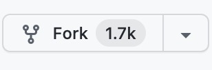
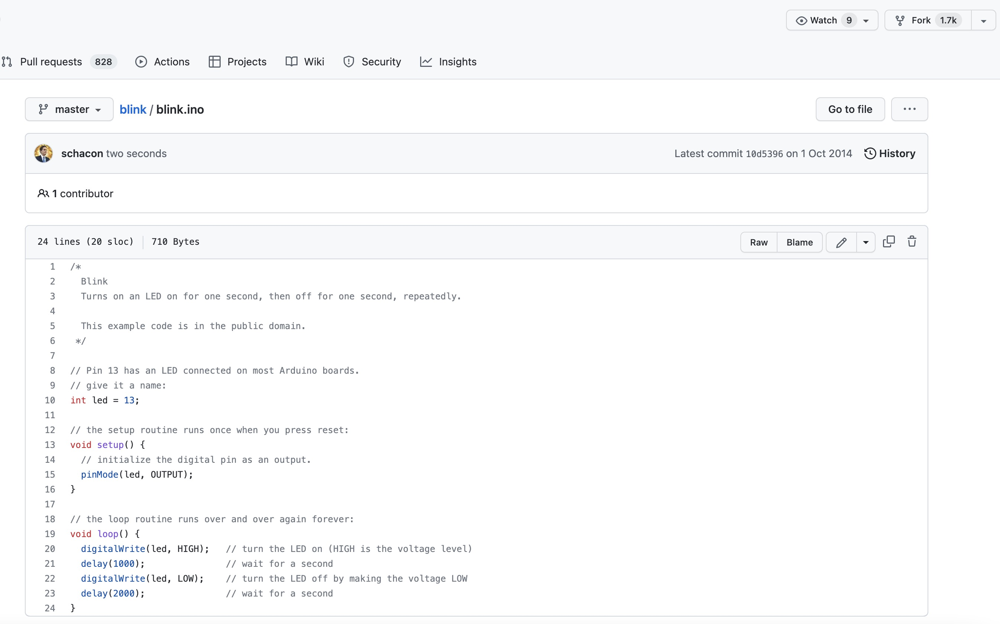
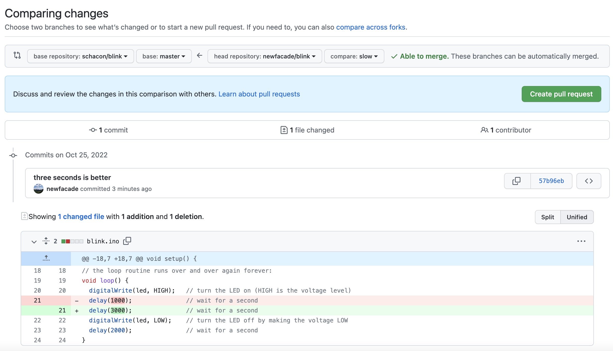
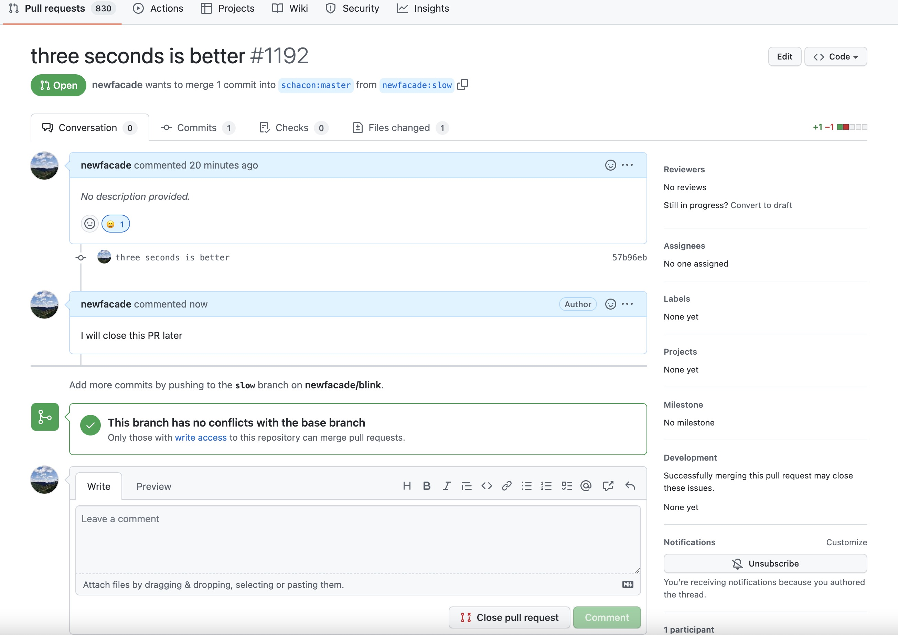

GitHub - 对项目做出贡献
Contents
GitHub - 对项目做出贡献#
Note
账户已经建立好了，现在我们来了解一些能帮助你对现有的项目做出贡献的知识。
派生项目#
如果你想要参加某个项目，但是并没有推送权限，这时你可以对这个项目进行派生（Fork）。当你派生一个项目时，GitHub 会在你的空间中创建一个完全属于你的项目副本，且你对其具有推送权限。
人们可以通过派生这个项目，将修改推送到派生出的项目副本中，并通过创建拉取请求（Pull Request，简称 PR）来让他们的改动进入源版本库。创建拉取请求后，就会开启一个可供审核代码的板块，项目的拥有者和贡献者可以在此讨论相关修改，直到项目拥有者对其感到满意，并且认为这些修改可以被合并到版本库。
你可以通过点击项目右上角的 “Fork” 按钮，来派生这个项目。
{kind=link}
GitHub 流程#
GitHub 设计了一个以拉取请求为中心的特殊合作流程。流程通常如下：
派生一个项目
从
master分支创建一个新分支提交一些修改来改进项目
将这个分支推送到 GitHub 上
创建一个拉取请求
讨论，根据实际情况继续修改
项目的拥有者合并或关闭你的拉取请求
将更新后的
master分支同步到你的派生中
现在我们用一个例子来加以说明。
创建拉取请求#
Newfacade 在找能在他的 Arduino 微控制器上运行的代码，他觉得 https://github.com/schacon/blink 中的代码不错。
{kind=link}
但是有个问题，这个代码中的闪烁频率太高了，我们觉得 3 秒一次比 1 秒一次更好一些。所以让我们来改进这个程序，并且将修改后的代码提交给这个项目。
首先单击 “Fork” 按钮来获得这个项目的副本。我们使用的用户名是 “newfacade”，所以这个项目副本的访问地址是：https://github.com/newfacade/blink。我们将它克隆到本地，创建一个分支，修改代码，最后再将改动推送到 GitHub。
$ git clone https://github.com/newfacade/blink (1)
Cloning into 'blink'...
$ cd blink
$ git checkout -b slow (2)
Switched to a new branch 'slow'
$ sed -i '' 's/1000/3000/' blink.ino (macOS) (3)
# If you're on a Linux system, do this instead:
# $ sed -i 's/1000/3000/' blink.ino (3)
$ git diff --word-diff (4)
diff --git a/blink.ino b/blink.ino
index 54d7e42..b83fcfe 100644
--- a/blink.ino
+++ b/blink.ino
@@ -18,7 +18,7 @@ void setup() {
// the loop routine runs over and over again forever:
void loop() {
digitalWrite(led, HIGH); // turn the LED on (HIGH is the voltage level)
[-delay(1000);-]{+delay(3000);+} // wait for a second
digitalWrite(led, LOW); // turn the LED off by making the voltage LOW
delay(2000); // wait for a second
}
$ git commit -a -m 'three seconds is better' (5)
[slow-blink 5fd784c] three seconds is better
1 file changed, 1 insertion(+), 1 deletion(-)
$ git push origin slow (6)
Enumerating objects: 5, done.
Counting objects: 100% (5/5), done.
Delta compression using up to 16 threads
Compressing objects: 100% (3/3), done.
Writing objects: 100% (3/3), 314 bytes | 314.00 KiB/s, done.
Total 3 (delta 1), reused 0 (delta 0)
remote: Resolving deltas: 100% (1/1), completed with 1 local object.
remote:
remote: Create a pull request for 'slow' on GitHub by visiting:
remote: https://github.com/newfacade/blink/pull/new/slow
remote:
To https://github.com/newfacade/blink
* [new branch] slow -> slow
将派生出的副本克隆到本地
创建出名称有意义的分支
修改代码（
sed -i 's/原字符串/新字符串' file会对每行匹配到的第一个字符串进行替换）检查改动
将改动提交到分支中
将新分支推送到 GitHub 的副本中
现在到 GitHub 上查看之前的项目副本，点击 Pull requests -> New pull request，设置 head repository 的 compare 为 slow，我们就能看到将被合并的改动与之前代码的对比：
{kind=link}
单击 Create pull request 按钮，为拉取请求填写标题和描述，再次点击 Create pull request，我们就创建好拉取请求了。与此同时这个项目的拥有者将会收到一条相关提醒。
利用拉取请求#
现在，项目的拥有者可以看到你的改动并合并它，拒绝它或是发表评论。各方可以在 PR 的 Conversation 框中进行互动，只需要单击代码中某一行，就可以对其发表评论。
{kind=link}
当维护者发表评论后，提交拉取请求的人，以及所有正在关注（Watching）这个仓库的用户都会收到通知。如果 Newfacade 有开启电子邮件提醒，他将会收到一封邮件。每个人都能在拉取请求中发表评论！
通过交流，贡献者知道如何做才能让改动被接受。幸运的是，这也是一件轻松的事情。你只需要对代码进行修改并重新提交，这些代码会自动更新到拉取请求上。对拉取请求添加提交不会触发提醒，因此 Newfacade 在推送了他的修正后，还需要通过评论告知项目拥有者他完成了修改请求。
Caution
GitHub 会检查你的拉取请求能否直接合并。如果拉取请求最终满足要求，项目拥有者或者其他有写入权限的人可以 Merge pull request，Github 会为此做出一个非快进式合并，即使可以快进合并。
这就是大部分 GitHub 项目的工作流程。